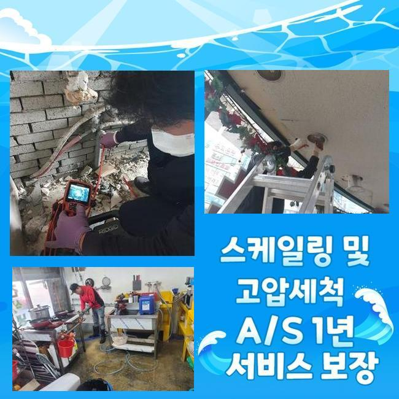
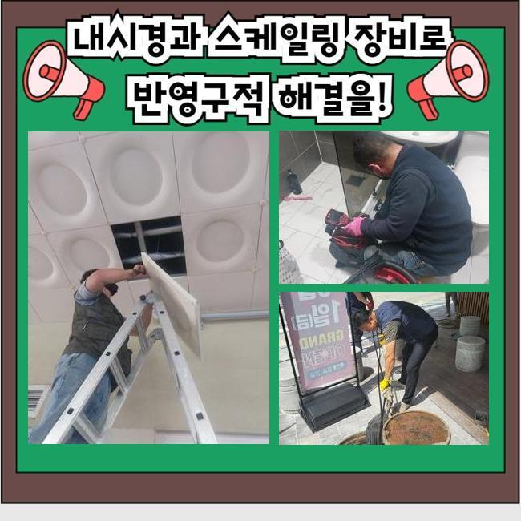
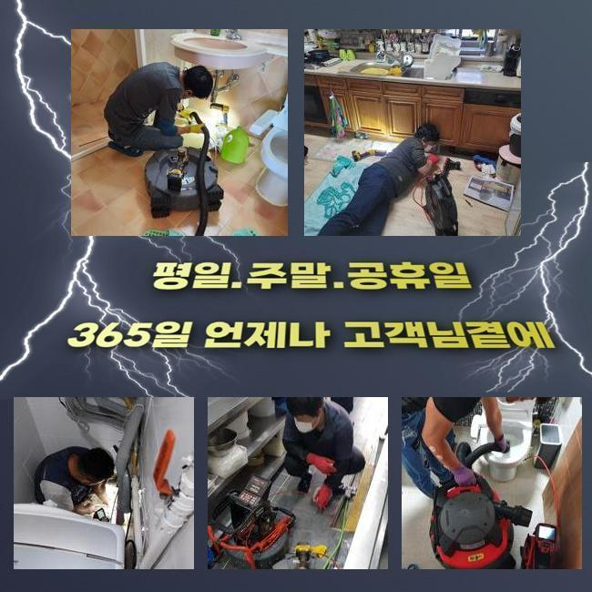
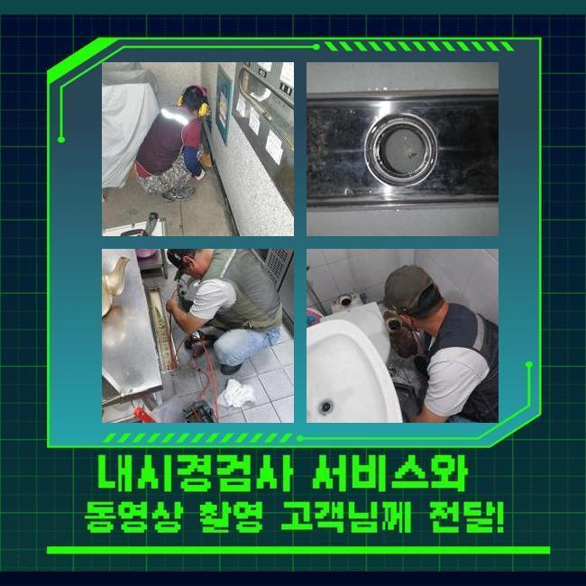
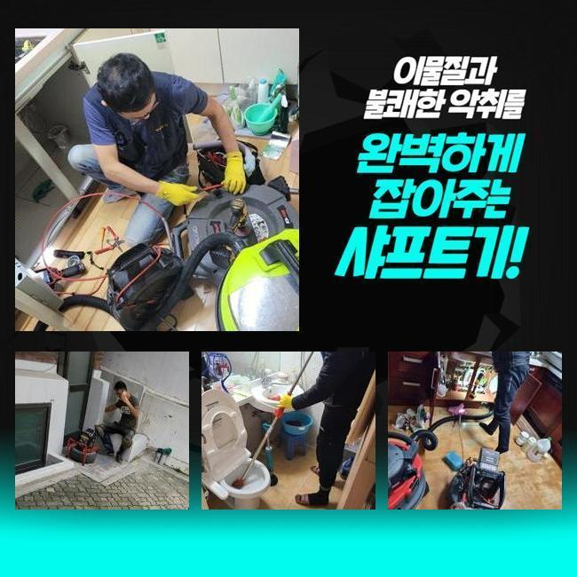
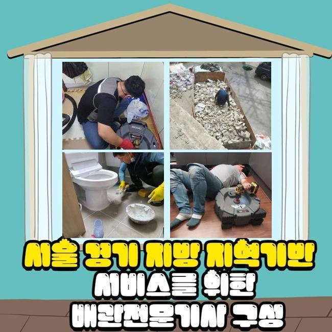
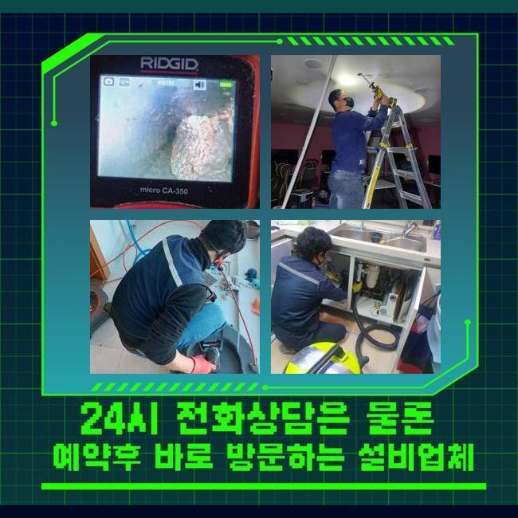

🏠 서천 하수도막힘 싱크대하수구막힘비용 하수구뚫음비용 변기뚫기비용
용인 싱크대막힘 전문 시공 후기

📋 작업 개요
- 위치: 용인
- 서비스 유형: 싱크대막힘, 변기막힘, 하수구막힘, 배관막힘, 누수수리, 뚫는업체, 배관청소, 고압세척, 설비공사, 악취차단
- 작업 일시: 2024. 11. 12. 22:10
- 업체명: 하수구수사대 (010-5615-2118)
🔍 문제 상황
서천 하수도막힘 싱크대하수구막힘비용 하수구뚫음비용 변기뚫기비용
주방이나 화장실에서 적합하게 하수가 내려가지않으면 곤혹스럽고 자연적으로 사라지지않는 상황이기 때문에 전문인을 찾게 되겠죠
이번엔 이에 관한 파이프 차단 사태를 설명해드리겠습니다
우리팀이 출장간 의뢰인의 주거지의 경우엔 전주에 배관이 막혀버려서 일상에 장애를 야기하고 있었죠
파이프가 정체를 이룬다면 오수가 원활히 빠져버리지 못해서 불쾌한 상황이 발생하기 쉽고 더욱 곤란한 상황을 불러올수도 있어요
그렇기 때문에 빠른 처리가 요망되며 문제에 처한 분들은 제때에 기술 지원을 받아보실것을 권장해드려요
해당되는 고장을 처리하려 우선해서 체크해봐야 되는건 배수쪽의 시스템이랍니다
배수관 이용에 부적합한 버릇을 갖추고 있으시다면 하수관의 메커니즘이 똑바로 가동하지 않는 경우도 많아요
그러하기에 정기적인 세척과 검사로 미연에 방지하는것이 좋답니다
작업과정에서는 배관카메라를 써서 심각한 막힘이 잔존하는 구간을 찬찬히 살피고 세정을 해나갑니다
청소가 올바르게 진행되려면 정확한 점검이 요청되기 때문이에요
노폐물이 쌓였던 처소에서는 특수약제를 주입해 완전히 해결되게끔 차근차근 세정을 시행했어요
시공을 해나가면서 잔류물이 사라져나갔지만 완전한 세정까지는 예측보다 긴 수리시간이 필수였습니다
딱딱해진 침전물들을 소쇄하려 분쇄기계를 가져왔습니다

🔎 원인 분석
💡 전문가 진단: 정밀 진단 장비를 사용하여 슬러지의 고착 여부를 판명하고 타격/세척 작업을 실시했습니다.
장비의 전방에 붙은 노커를 통해서 침전물을 파쇄하여 제거가 가능해요
슬러지가 벽쪽에 상당히 많아 샤프트 장비를 사용하여 초반시공을 조율했고 동시에 음식찌꺼기 및 고착화된 성분들도 소쇄하기로 결정했어요
방치해 버리면 비경한 사태가 촉발될수 있기에 조속한 처치가 요망된다고 말해드렸어요
해당되는 청소업무 간에는 2차적인 트러블이 안나오도록 조심스러운 자세를 유지해야 됩니다
관에 자극이 쌓이면 그쪽으로 배수흐름이 모이게 되고 균열이 생기기도 해요
그렇기에 해당 기계를 적용할 땐 필수적으로 충분한 경험이 동반되어야 해요
또 그런 상황엔 신속하게 문의를 해서 침전물이 적체되지 않게 만드시는게 중요하죠
누수증세를 알아보기 위해선 배수 속도를 살펴보고 내시경cctv로 배수관 내측 전체를 살펴야 해요
또 고장이 발굴됐다면 보강시공을 통하여 발빠른 처치를 이행해야 됩니다
저희팀은 해당되는 상황이 일어날수 있다는 전제로 전반적인 수리도구들을 늘 갖추고 다니죠
하수구에서 발현되는 잔류물의 상태를 점검해보면 관련없는 잔류물이 나타날때가 있는데요
공용사용 장소라면 더 골치아픈 정황으로 나타나죠
그럴때는 관로에 하중이 가해져 물샘까지 나타날수 있기에 정밀한 조사가 불가결합니다
내시경기기로 문제의 공간을 조사하는 업무가 제외된다면 고장 원인을 탐검하지 못할수도 많아요

🔧 작업 과정
배관카메라로 파이프 안쪽을 들여다보며 다양한 이물들과 딱딱해진 잔류물로 배수공간이 폐쇄됐다는걸 확인하였어요
방치해버리면 침전물이 위로 솟구칠수 있으므로 조속한 처리가 요구되었죠
관안은 많이 더러워진 상태였고 음식물 여러 이물질과 석회성분이 쌓여 있었죠
이것으로 인하여 물이 온전히 흘러가지 못해 막힘상황이 일어난거죠
그러므로 분쇄와 세척작업이 요청되었어요
내측의 이물들을 알아보고자 내시경설비를 적용했고 이에 적합한 처방이 내려졌죠
관로 정체를 정리하려는 플랜을 짜고 작업을 시행했어요
그리고 결과적으로 파이프 통로를 순조롭게 확보할수 있었어요
또 세척 업무간 발생하는 노폐물이 배수관으로 흘러들어 누수증상을 유발할수도 있어서 미리 사전적으로 차단하시는게 합당합니다
그걸 방지하려면 공사시 배수공을 차단해서 노폐물이 들어가지 않도록 조치해야 하죠
이런 대응법을 기반으로 원만한 관로 활용을 해낼수 있죠
배관벽의 파열을 방지하려 신중한 분쇄업무를 거치면서 배관카메라를 활용하여 침전물이 모인 공간을 발견했어요
하수관 하단부엔 단단하게 굳은 슬러지가 층을 이루었고 그것을 내팽개쳐버린다면 통수문제와 함께 악취까지 발발할거란 사실을 예상할수 있었어요
저희들은 조심스레 이물들을 걷어내고 관을 세정하여 배수시스템이 순조롭게 가동되게끔 조치하였습니다
이와 같은 철두철미한 정비공정으로 설비의 성능을 보존하려는 행동이 이어져야 할것입니다
전반적인 세척을 바탕으로 문제들을 소멸시키고 추후 발생 가능한 현상들도 예방할수 있었어요
의뢰인께서는 본질을 알아내고 성과를 도출하는 단계가 중대한 이슈라는걸 느꼈다고 하시네요
신속하게 공정을 진행하려면 샤프트기기를 활용이행해야 됩니다
해당 기기가 마련되지 않는 경우엔 이물을 확실하게 제거하기 힘들고 몇달 가지않아 재차 차단될수있기 때문이랍니다
석션기계도 필수적인 업무를 책임지고 있음을 말씀드려요
배관 고장은 일단 발생하면 더욱 커질수가 있습니다
그러하기에 주기적 세척과정을 통해서 트러블을 방예하고 나타난 고장은 신속히 대응하여 해결이행해야 됩니다


✅ 작업 완료
그러면 관계된 장애와 연관된 장애현상을 최소화할 수 많은데요
배관쓰레기 정리를 자주하고 근방을 깨끗하게 유지하시면 정상적 배수상황을 가져갈수 있겠죠
저희들은 고객님의 요청에 의해서 조속히 날을 정한다음 방문드리고 많아요
파이프가 어떠한 물질로 차있는지 가리지않고 첨단 기계들과 노하우로 일한다는 걸 설명드립니다
갑자기 파이프에 고장에 생겼다면 주저하지 말고 연락해 주세요
신속하게 정리해 드릴게요




⚠️ 베란다 누수 및 방수 관리 방법
- ✅ 비가 많이 올 때 창틀 주변이나 아래층 천장에 얼룩이 생기는지 정기적으로 확인해 보세요.
- ✅ 우수관 주변 실리콘 마감이 들뜨거나 깨진 틈새가 있는지 손상 여부를 수시로 체크하세요.
- ✅ 베란다 바닥 타일의 줄눈(메지)이 소실되면 그 틈으로 물이 침투하여 누수가 유발됩니다.
- ✅ 누수 의심 증상 발견 시 방치하면 아래층 손실이 커지므로 즉시 전문가의 진단을 받으십시오.
💡 핵심 정리
- 확실한 장비 작업(내시경 점검 및 샤프트 스케일링)으로 원인을 뿌리 뽑습니다.
- 작업 후 1년 이내에 동일한 부위 재발 시 100% 무상 A/S 서비스를 보장합니다.
- 서울 · 경기 · 인천 전 지역에 24시간 언제든 긴급 출동할 수 있도록 항시 대기 중입니다.
❓ 자주 묻는 질문 (FAQ)
🚨 용인 싱크대막힘 문제로 고민이신가요?
정확한 원인 진단과 확실한 시공으로 재발 없는 해결을 약속드립니다.
24시간 긴급 출동 | 서울 · 경기 · 인천 전지역 | 1년 내 재발 시 무상 A/S